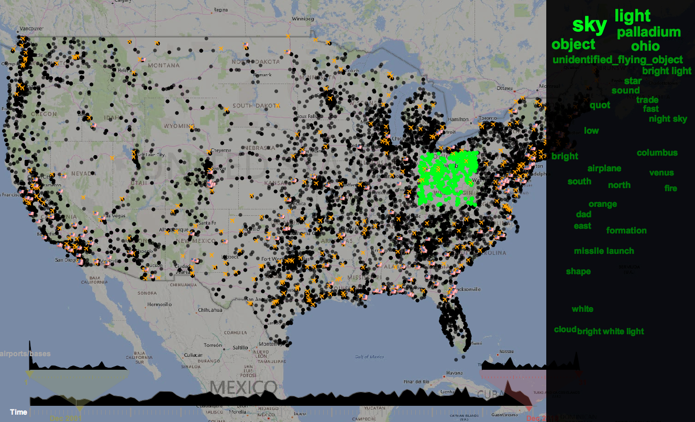
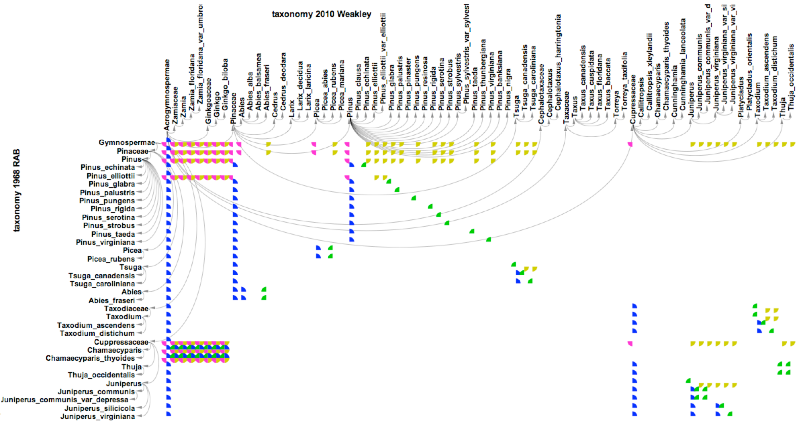

Geo-spatial visualizations

Visualizing UFO sightings on a 2D map
Visualizing Lyme diseases in 3D
Networks and structures
Hierarchical structures and prey-predator relationships of mammals (left) and birds (right)
Causal relationships of 20 diseases
Dynamic network visualization
Major events from political blogs were automatically detected in my visualization.
Matrix visualization

Visualizing the alignment of taxonomic classifications: Gymnospermae sec. Weakley (2010) vs. RAB (1968)
© Last revised: Sep 11th, 2016